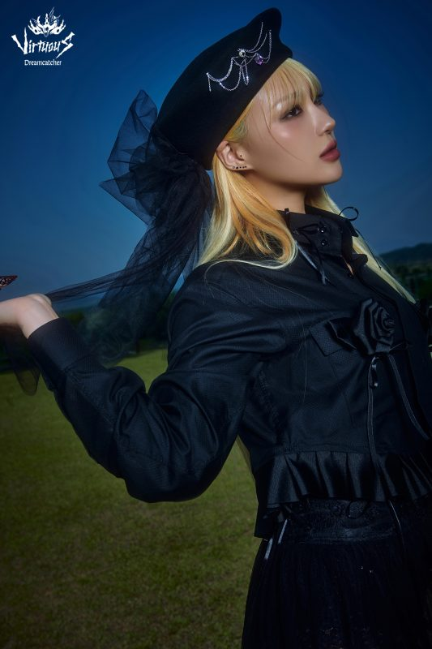

Siyeon

Lee Siyeon (이시연), mais conhecida como Siyeon, nasceu no dia 01 de Outubro de 1995, em Daegu - Coreia do Sul.
Alguns fatos sobre a Siyeon:
- Ela é a vocalista principal do grupo
- Consegue imitar o Pikachu, Squirtle e Psyduck
- Sua cor favorita é o azul
- Foi trainee por 2 anos e meio
- Fã dos Vingadores
Redes sociais da Siyeon: Instagram
Voltar